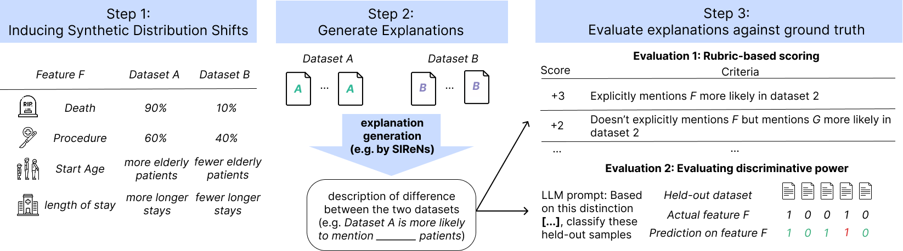
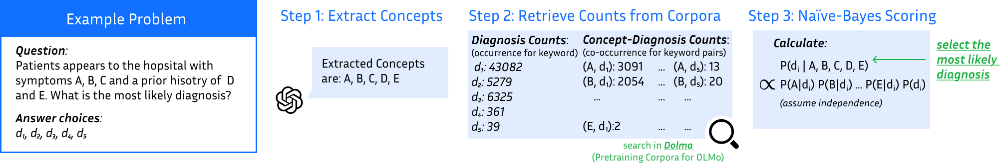
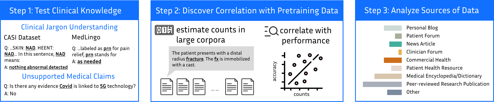

About me
I am a Computer Science Ph.D. student at Duke University, advised by Prof. Monica Agrawal. My research focuses on understanding how data shapes the behavior of large language models, with the goal of making these systems more reliable, interpretable, and robust.
I am particularly interested in how models learn from diverse data—including text, time series, and multimodal inputs—and adapt to changes during training and deployment. A central application of my work is clinical NLP, where understanding model capabilities, limitations, and generalization is especially important.
Previously, I received my B.S. in Computer Science and Applied and Computational Mathematics from the University of Southern California, where I was fortunate to work with Prof. Yan Liu, Prof. Jesse Thomason, and Prof. Maja Matarić.
Open to 2026 research opportunities: in-semester (part-time).
Publications
* Equal contributionPreprints
2025
Interpreting Dataset Shift in Clinical Notes
Research details
Distribution shift degrades ML performance, especially in clinical text. Therefore, actionability requires not just detection but explanation. We establish an extensible benchmark suite that induces synthetic distribution shifts using real clinical notes and develop two methods for assessing generated shift explanations. We further introduce SIReNs, a general-domain end-to-end approach that explains distributional differences by selecting representative notes from each. SIReNs reliably recover salient binary shifts with comparatively lower performance on subtle continuous changes, showing a gap to a ground-truth oracle and suggesting room for improvement in future methods.

Counting Clues: A Lightweight Probabilistic Baseline Can Match an LLM
Research details
We probed whether LLM success on clinical Multiple-Choice Diagnostic Questions reflects probabilistic inference by developing the Frequency-Based Diagnostic Ranker (FBDR), a simple Naive Bayes approach that extracts clinical concepts and scores diagnosis options using co-occurrence statistics from pretraining corpora. We found that FBDR achieved accuracy closely matched by a corresponding 7B LLM using the same pretraining corpora, and the predictions are complementary. While LLM performance appears driven by mechanisms beyond simple frequency aggregation, a historically grounded, low-complexity, expert-system style approach still accounts for a substantial portion of benchmark performance.

Diagnosing our datasets: How does my language model understand clinical text?
Research details
We examined the relationship of clinical information (clinical jargon understanding and unsupported medical claims) between the occurrence of keyword pairs in pretraining corpora and model performance. For clinical jargon understanding, we also curated a benchmark Medlingo using clinical abbreviations from real-world clinical notes. We further analyzed the sources of clinical information in pretraining datasets to guide future corpus design.

What Patients Really Ask: Exploring the Effect of False Assumptions in Patient Information Seeking
2024
TEMPO: Prompt-based Generative Pre-trained Transformer for Time Series Forecasting
GPT4MTS: Prompt-based Large Language Model for Multimodal Time-series Forecasting
Research details
We introduced GPT4MTS, a prompt-based framework that fuses numeric time series with aligned textual context. We also built a GDELT-derived multimodal news impact dataset and showed consistent forecasting gains over strong unimodal baselines, demonstrating effective multimodal fusion and the value of extra-textual information.
2023
Academic service
Service & teaching →- Reviewer: ACL ARR 2024 (June, October), ACL ARR 2025 (February, May)
- Reviewer: NeurIPS 2025
- Reviewer: ML4H 2025